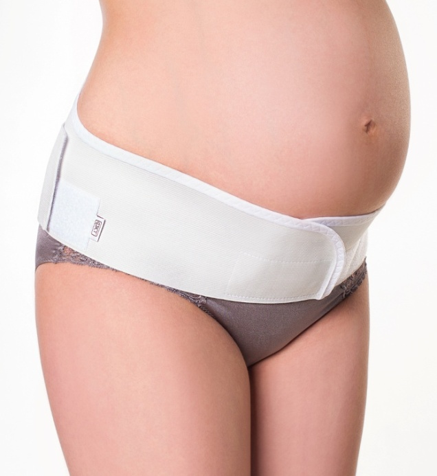
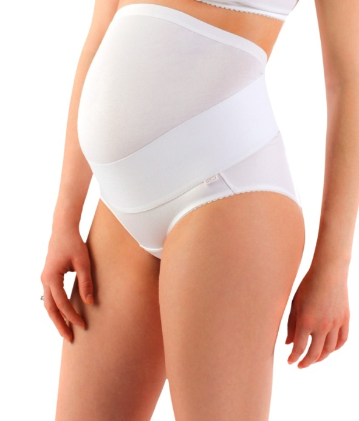
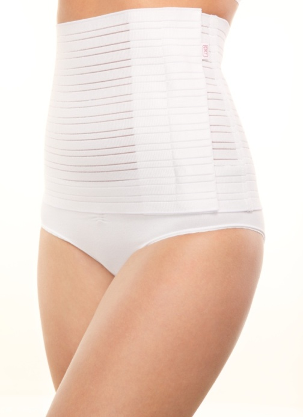

По материалам многоцентрового проспективного наблюдательного исследования Российского общества акушеров-гинекологов
«Опыт и перспективы применения бандажа у беременных и родильниц»
под руководством Президента РОАГ академика В. Н. Серова
Исследование проводилось с использованием специального белья торговой марки «ФЭСТ»
Универсальный бандаж
Универсальный бандаж ФЭСТ можно носить до и после родов. До родов обеспечивает поддержку живота и разгрузку спины, после родов утягивает брюшную стенку, способствует более быстрому восстановлению тонуса мышц и кожи живота, приводит к нормализации давления внутри брюшной полости, органы брюшной полости занимают правильное положение, предотвращая опущение внутренних органов или образование грыж, бандаж снимает нагрузку с позвоночника, избавляет от болей в спине, помогает сохранить правильную осанку и грацию. 
По заключению врачей при ношении бандажа снижается вероятность:
- прерывания беременности — 55,8%;
- преждевременных родов — 36,7%;
- возникновения и развития симфизита, варикозной болезни;
- угрозы образования стрий.
Бандаж рекомендовано носить:
- с 20-24 недели беременности;
- при акушерской патологии (рубец на матке; угроза прерывания беременности во втором и третьем триместре; чрезмерное увеличение размеров матки вследствие многоводия, многоплодия, больших размеров плода; предлежание или низкое расположение плаценты);
- при повторной беременности;
- при несостоятельности мышц передней брюшной стенки и тазового дна;
- при искривлении позвоночника;
- при остеохондрозе;
- при болях в пояснице;
- при активном образе жизни (когда беременная находится в вертикальном положении три часа в день и дольше); особенно необходим бандаж работающим женщинам.
Противопоказаний к ношению бандажей в дородовой период практически нет. Есть лишь одна акушерская ситуация, когда с бандажом лучше повременить: если после 30 недель плод не занял правильное положение — головкой вниз, а лежит в поперечном или тазовом положении, то целесообразно сначала под руководством акушера-гинеколога попытаться «исправить положение» различными специальными упражнениями и лишь затем «зафиксировать» его в правильном положении при помощи бандажа.
В послеродовой период (при отсутствии противопоказаний) бандаж следует начинать носить с первых дней после родов ежедневно в течение полутора месяцев. Во время сна применять бандаж не рекомендуется. Надевать бандаж лучше в положении «лежа на спине», чтобы обеспечить равномерное, плотное прилегание ткани к коже и зафиксировать мышцы и внутренние органы в правильном положении.
Перед выбором бандажа проконсультируйтесь с врачом акушером-гинекологом.
Полностью результаты исследования можно посмотреть в разделе "Исследования РОАГ" на сайте www.mama-fest.com.
Дородовой бандаж
Дородовой бандаж ФЭСТ обеспечивает поддержку живота и разгрузку спины.
По заключению врачей при ношении бандажа снижается вероятность:
- прерывания беременности — 55,8%;
- преждевременных родов — 36,7%;
- возникновения и развития симфизита, варикозной болезни;
- угрозы образования стрий.
Бандаж рекомендовано носить:
- с 20-24 недели беременности;
- при акушерской патологии (рубец на матке; угроза прерывания беременности во втором и третьем триместре; чрезмерное увеличение размеров матки вследствие многоводия, многоплодия, больших размеров плода; предлежание или низкое расположение плаценты);
- при повторной беременности;
- при несостоятельности мышц передней брюшной стенки и тазового дна;
- при искривлении позвоночника;
- при остеохондрозе;
- при болях в пояснице;
- при активном образе жизни (когда беременная находится в вертикальном положении три часа в день и дольше); особенно необходим бандаж работающим женщинам.
Противопоказаний к ношению бандажей в дородовой период практически нет. Есть лишь одна акушерская ситуация, когда с бандажом лучше повременить: если после 30 недель плод не занял правильное положение — головкой вниз, а лежит в поперечном или тазовом положении, то целесообразно сначала под руководством акушера-гинеколога попытаться «исправить положение» различными специальными упражнениями и лишь затем «зафиксировать» его в правильном положении при помощи бандажа.
Надевать бандаж лучше в положении «лежа на спине», чтобы обеспечить равномерное, плотное прилегание ткани к коже и зафиксировать мышцы и внутренние органы в правильном положении.
Для определения размера бандажа необходимо измерить обхват бёдер, при этом, сантиметровая лента должна проходить параллельно полу, и соотнести полученные параметры с таблицей определения размера на упаковке изделия. Правильный выбор бандажа подтвердится отсутствием излишней стянутости и ощущением комфорта при его ношении.
Перед выбором бандажа проконсультируйтесь с врачом акушером-гинекологом.
Полностью результаты исследования можно посмотреть в разделе "Исследования РОАГ" на сайте www.mama-fest.com.
Послеродовой бандаж
Бандаж послеродовой ФЭСТ утягивает брюшную стенку, способствует более быстрому восстановлению тонуса мышц и кожи живота в послеродовой период, приводит к нормализации давления внутри брюшной полости. Бандаж снимает нагрузку с позвоночника, избавляет от болей в спине, помогает сохранить правильную осанку и грацию. При ношении послеродового бандажа органы брюшной полости занимают правильное положение, предотвращая опущение внутренних органов или образование грыж.
Благодаря специальному крою и эластичным материалам, послеродовой бандаж обладает высокой утягивающей способностью, поддерживает живот и бедра, создает необходимую компрессию, формирует правильные пропорции фигуры, позволяет значительно сократить восстановительный период после родов.
Послеродовой бандаж (при отсутствии противопоказаний) следует начинать носить с первых дней после родов ежедневно в течение полутора месяцев. Во время сна применять бандаж не рекомендуется. Надевать послеродовой бандаж лучше в положении «лежа на спине», чтобы обеспечить равномерное, плотное прилегание ткани к коже и зафиксировать мышцы и внутренние органы в правильном положении.
Для определения размера бандажа необходимо измерить обхват бёдер, при этом, сантиметровая лента должна проходить параллельно полу, и соотнести полученные параметры с таблицей определения размера на упаковке изделия. Правильный выбор бандажа подтвердится отсутствием излишней стянутости и ощущением комфорта при его ношении.
Перед выбором бандажа проконсультируйтесь с врачом акушером-гинекологом.
Полностью результаты исследования можно посмотреть в разделе "Исследования РОАГ" на сайте www.mama-fest.com.